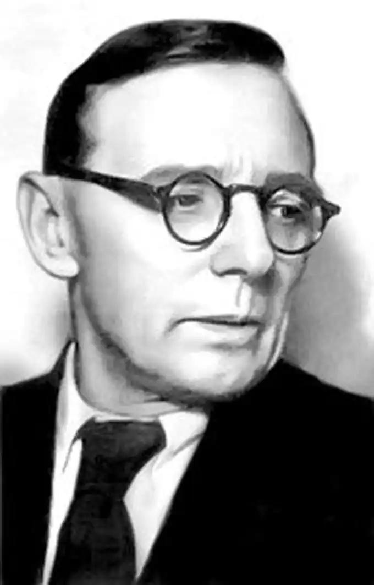
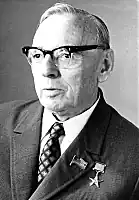
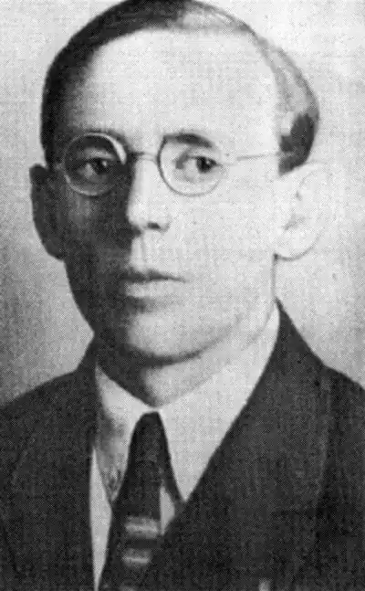
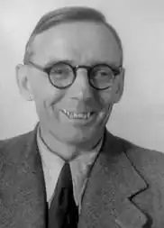

Смолич Юрій Корнійович
(07.07.1900 – 28.08.1976)
письменник, актор, театральний критик Юрій Корнійович Смолич народився 7 липня 1900 року у м. Умані в родині вчителя Уманської чоловічої гімназії Корнелія Івановича Смолича. Маленьким хлопчиком не раз із батьками бував у Софіївці. Дитячі враження від уманського диво-саду назавжди лишилися в пам’яті і пізніше вилилися на папір у автобіографічній повісті "Дитинство". Майбутній письменник навчався в кількох провінційних гімназіях, потім вступив до Київського комерційного інституту. 1918 року він залишає навчання і стає санітаром "Добровільного загону по боротьбі з висипним тифом", пізніше працює помічником лікаря. Згодом стає професійним актором. Працював інспектором театрів Головполітосвіти наркомпросу УРСР, театральним критиком і редактором журналу "Сільський театр" (1926 – 1929). У післявоєнний час Ю. Смолич працював заступником, а потім головою правління СПУ, очолював Українське товариство культурних зв’язків з українцями за кордоном ("Україна"), обирався депутатом до Верховної Ради УРСР. Влітку 1949 року Юрій Корнійович відвідав рідну Умань. Численною і розмаїтою є творча спадщина Ю. Смолича – романи, повісті, оповідання, унікальні спогади. Письменник проявив себе в різних жанрах – від епопей, фантастичних і пригодницьких оповідей до біографічних переказів. Багато написав і для театру. Був нагороджений численними державними нагородами. Помер письменник 26 серпня 1976 року. Похований на Байковому кладовищі у Києві. Література Смолич, Ю.К. Твори: у 8 т. /Ю.К. Смолич. – К.: Дніпро, 1983. – Т. 1 – 8. Смолич, Ю.К. Дитинство. Наші тайни. Вісімнадцятилітні: повість, романи. – К.: Наук. думка, 1987. – 752 с. Автобіогр. трилогія. *** Голубева, З.С. Юрій Смолич: нарис життя і творчості. – К.: Дніпро, 1990. – 201 с.: іл. Гончарук, В.А. Смолич Юрій Корнійович /В.А. Гончарук //Письменники Уманщини. – Умань, 2011. – С. 213 – 218. Комарницький, М. Уклін рідній Умані /М. Комарницький //Про Юрія Смолича. – К., 1980. – С. 22 – 25. Даниленко, О. "Благословенна будь, Умань…": [до 100-річчя з дня народження Ю. Смолича] /О. Даниленко //Черкас. край. – 2000. – 12 лип. – С. 4.